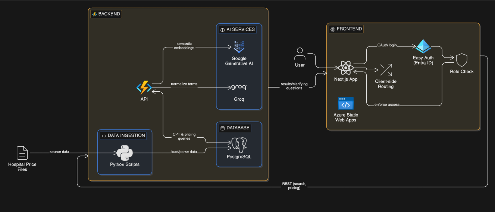
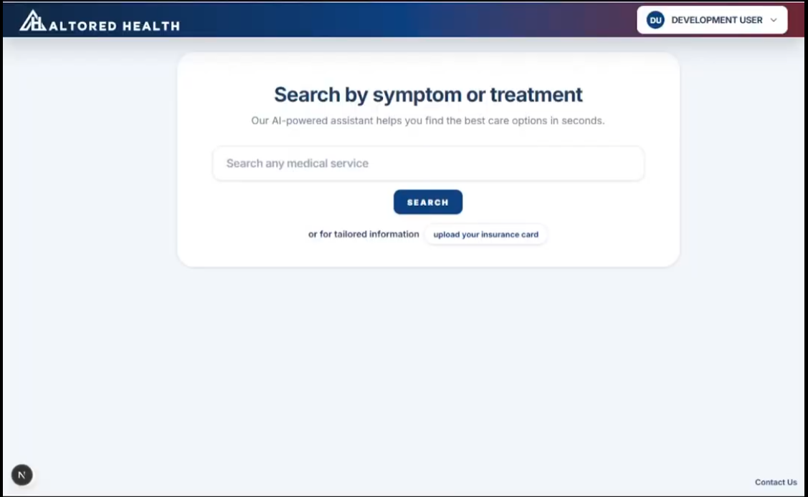
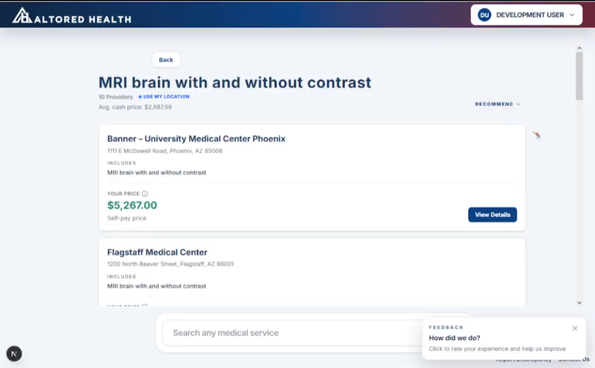
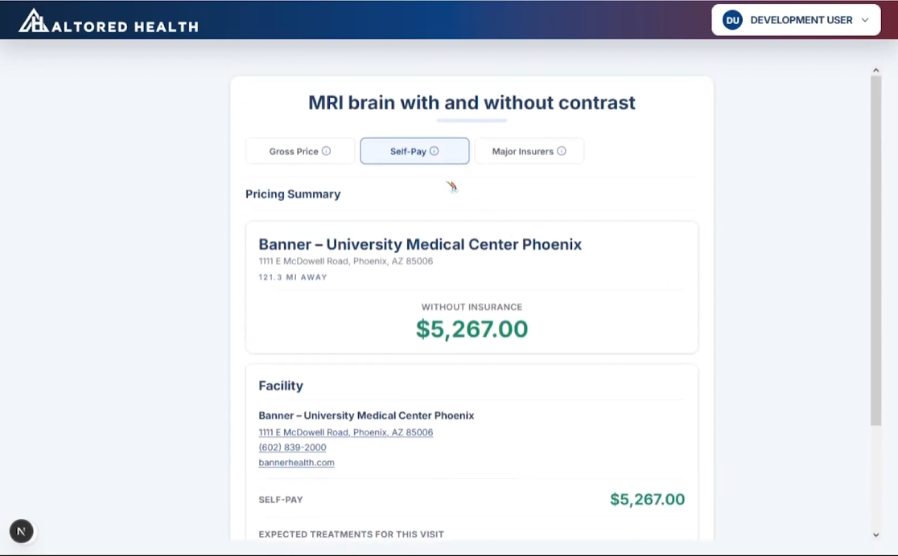

Value Proposition
Healthcare pricing is unpredictable by design. Patients routinely receive surprise bills for procedures they thought were covered, and there is no easy way to compare costs across providers before making a care decision. Altored Health changes that by aggregating standardized hospital pricing data into a single, searchable platform. Users can look up any procedure, compare prices across providers, and see what they will actually pay, whether through insurance or out of pocket, before committing to care.
The result is a platform that reduces financial anxiety, prevents surprise billing, and puts patients in control of their healthcare decisions for the first time.
Product Demo
Watch the platform in action. This demo walks through the core search experience, pricing comparison, and key features built into the current release.
System Architecture
Altored Health is built on a cloud-native architecture hosted entirely on Microsoft Azure. The diagram below shows how the major components connect, from raw data ingestion through to the user-facing interface.

The system is organized into four layers. The data ingestion layer consists of Python scripts that pull source data from hospital price files, parse and load it into a PostgreSQL database, and send CPT and pricing queries to the API. The AI services layer sits within the backend alongside the API: Google Generative AI generates semantic embeddings to normalize procedure terms across inconsistent naming conventions, while Groq handles clarifying questions and returns results directly to the frontend. The API ties these together, passing normalized terms between services and serving REST endpoints for search and pricing to the frontend. The frontend is a Next.js application deployed on Azure Static Web Apps, with client-side routing and Easy Auth via Entra ID handling OAuth login and role-based access control.
Key Use Cases
Searching for a Procedure
A patient needs a knee MRI and wants to know what it will cost before scheduling. They open Altored Health and type in the procedure name. The search bar accepts natural language input and the platform surfaces relevant results instantly.

Results come back as a clean list of providers with real pricing pulled from standardized hospital data. The patient can sort by price, filter by location, and identify the best option without making a single phone call.

Comparing Self-Pay vs. Insurance
A user with a high-deductible plan wants to know whether it is worth filing a claim for an upcoming procedure or just paying out of pocket. Selecting a provider pulls up a detailed breakdown of coverage options, with self-pay and insurance rates displayed side by side so the answer is clear before the appointment is ever booked.

Getting a Recommended Plan
After searching for several procedures across multiple sessions, a user sees a recommended insurance plan surfaced on their dashboard. The recommendation is generated by the Groq-powered engine based on their actual search history, suggesting a plan that would cover their most common searches at a lower out-of-pocket cost than their current coverage.